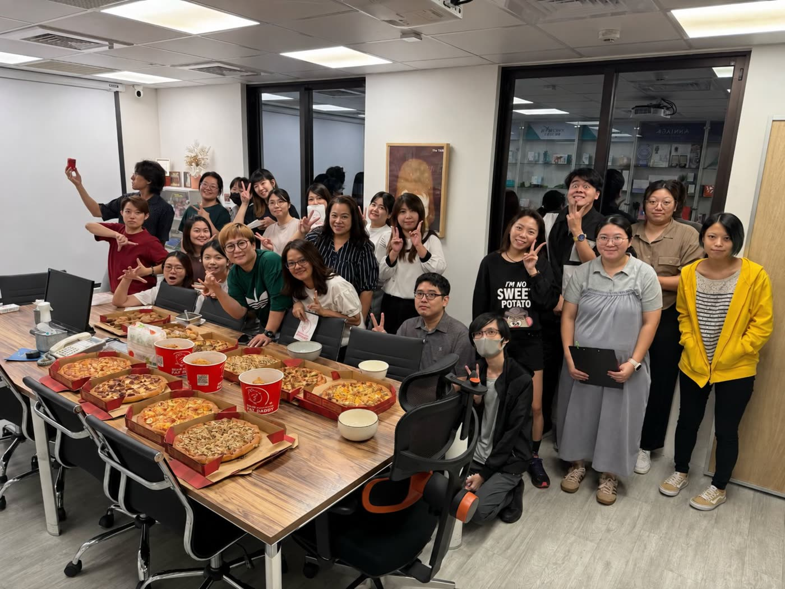
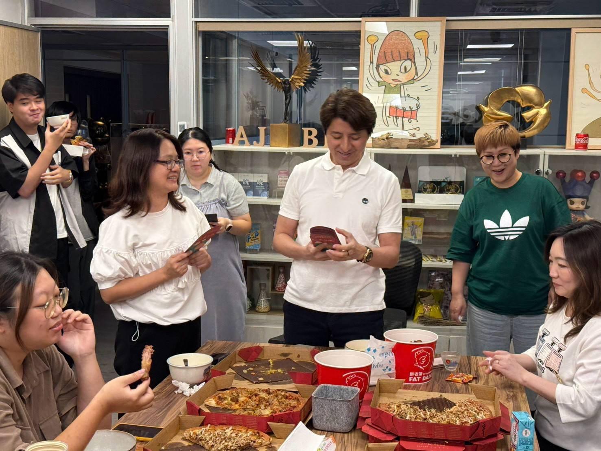
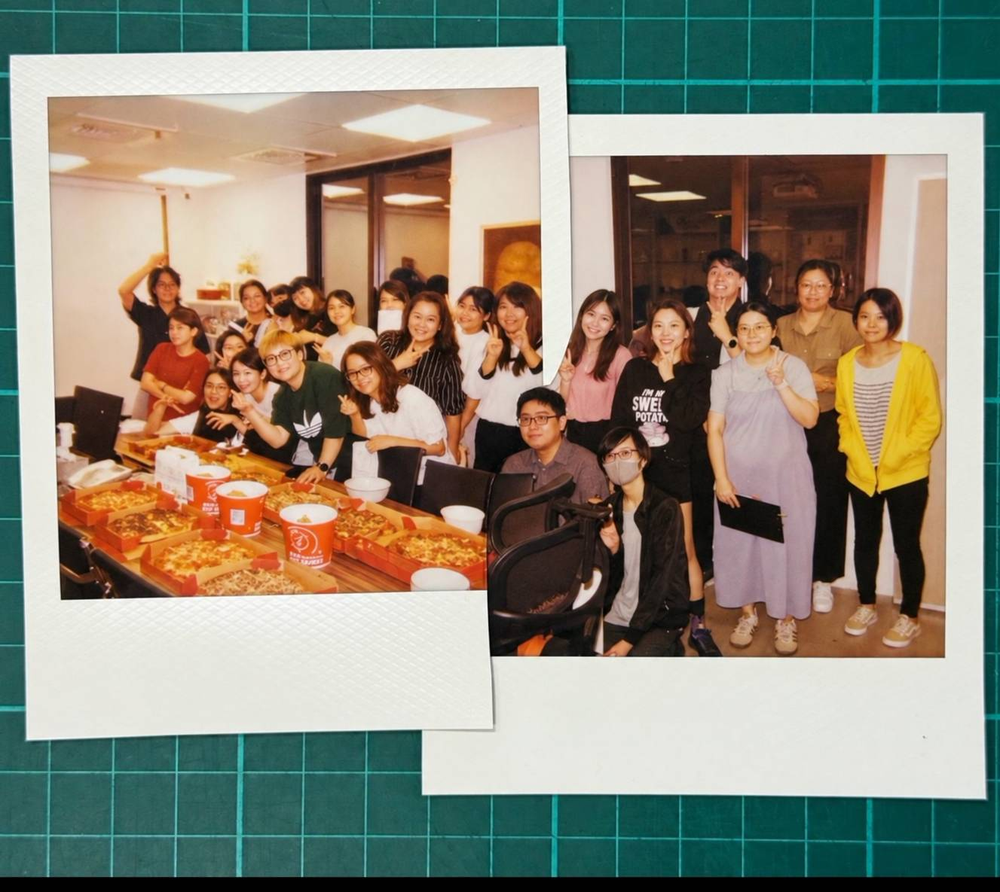

💡 月圓之前，先把幸福送給每一位夥伴
中秋節，是團圓的日子。
而對百達醫來說，「團圓」不只是在家人之間，也存在於每天一起工作、一起努力、一起面對挑戰的夥伴之間。
在中秋佳節前夕，百達醫特別安排了一場輕鬆的午間聚餐，沒有正式的流程，也沒有拘謹的儀式，就是把大家喜歡的 披薩、胖老爹炸雞 擺滿桌，邀請所有夥伴暫時放下手邊工作，一起吃飯、聊天、拍照。

忙碌的日常裡，也要記得一起好好吃頓飯
一家公司每天有許多不同的任務。
從產品研發、生產製造、品質管理、業務服務到品牌行銷，每一個環節的順利運作，都來自不同崗位夥伴彼此的配合。
有時候，我們忙著趕進度、處理問題、回覆客戶，可能一整天下來都沒有機會好好坐下來聊聊天。
所以這一餐，看似只是一場簡單的公司聚餐，對我們而言，卻是一個很珍貴的時刻。
因為真正凝聚一個團隊的，不只有工作上的合作，也包括這些一起笑、一起吃飯、一起留下回憶的日常。

「大家靠近一點～」
「中秋節快樂！✌️」
一份中秋禮金，是祝福，也是公司對夥伴的感謝
聚餐之外，公司也準備了中秋禮金，由老闆親自將這份節慶心意送給每一位夥伴。
一份禮金，代表的不只是節日祝福。
更想傳達的是：
謝謝大家在自己的崗位上努力，也謝謝每一位夥伴，成為百達醫一路向前的重要力量。
企業的成長從來不是一個人的成果，而是一群人共同努力、彼此支援，一點一滴累積出來的。
因此，在追求營運成長與專業服務的同時，百達醫也希望，公司可以是一個讓夥伴安心工作、一起成長，也能共享成果的地方。

「收到中秋心意啦 ❤️」
「一起努力，也一起分享！」
我們不只是同事，也是一起往前走的夥伴
鏡頭裡，有人比著 YA、有人搞怪、有人笑得很開心，也有人默默站在旁邊看著大家。
沒有刻意安排的姿勢，反而留下了最真實的百達醫。
我們喜歡這樣的畫面。
因為企業文化，不一定要寫成很大的口號。
它可能就是忙碌工作後的一頓飯，是同事之間的一句玩笑，是遇到事情時願意互相幫忙，也是公司在重要節日時，記得對大家說一聲：
「辛苦了，謝謝有你。」
「這張一定要留下來！」
「百達醫一家人 ❤️」
把專業做好，也把一起工作的日子過得更好
百達醫企業一路走來，持續專注於保健食品的研發、生產與專業服務。
但我們相信，一家企業真正能走得長久，除了產品、品質與服務之外，更重要的是「人」。
- 因為每一項產品背後，都有一群認真的人；
- 每一次準時交付背後，都有不同部門的共同努力；
- 每一次公司的成長，也都有每一位夥伴參與其中。
今年中秋，我們用一桌披薩與炸雞、一份中秋心意，以及一張張笑得很開心的照片，記錄屬於百達醫的團圓時刻。
月圓，是團聚。
一起努力，也一起分享，就是百達醫最珍惜的日常。
祝福所有百達醫夥伴，以及一路支持我們的客戶與合作夥伴：
中秋佳節愉快，平安、健康、幸福團圓 🌕
百達醫企業有限公司 敬賀